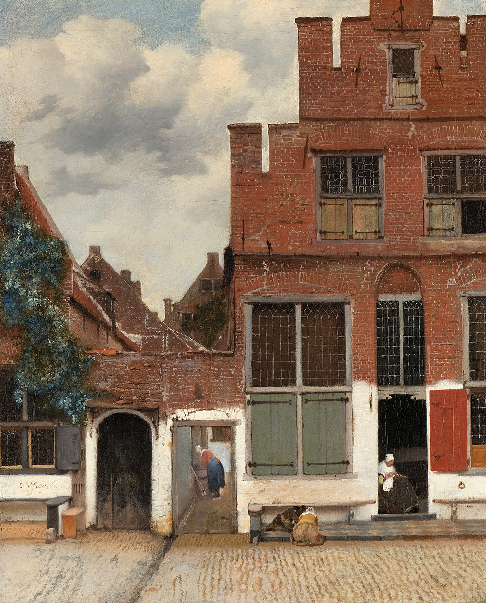

<head>
<meta charset="UTF-8" />
<meta name="keywords" content="drawing, painting" />
<meta name="description" content="drawings by Sunjy" />
<title>Sunjy</title>
<link rel="shortcut icon" type="image/x-icon" href="../../mImages/mCommon/favicon.ico" media="screen" />
<link rel="stylesheet" type="text/css" href="../../mCsses/mCommon/mCssA.css" />
<link rel="stylesheet" type="text/css" href="../../mCsses/mCommon/mCssB.css" />
<link rel="stylesheet" type="text/css" href="../../mCsses/mCommon/mCssC.css" />
<link rel="stylesheet" type="text/css" href="../../mCsses/mCommon/mCssD.css" />
<link rel="stylesheet" type="text/css" href="../../mCsses/mContent/mCssA.css" />
<link rel="stylesheet" type="text/css" href="../../mCsses/mContent/mCssB.css" />
<link rel="stylesheet" type="text/css" href="../../mCsses/mContent/mCssC.css" />
<link rel="stylesheet" type="text/css" href="../../mCsses/mContent/mCssD.css" />
</head>
<script type="text/javascript" src="../../mScripts/mContent/mContentAA.js" /></script>
<script type="text/javascript" src="../../mScripts/mContent/mContentAB.js" /></script>
<script type="text/javascript" src="../../mScripts/mContent/mContentAC.js" /></script>
<script type="text/javascript" src="../../mScripts/mContent/mContentAD.js" /></script>
<script type="text/javascript"></script> 
<script type="text/javascript">
document.write('<div class="mImgAbsolute"></div>');
/*
document.write('<p class="mFontSizeBColor" />From a white paper...</p>');
document.write('<table class="center"><tr><td>');
document.write('');
document.write('</td></tr></table>');
*/
</script>


<script type="text/javascript">
document.write('<p class="mFontSizeBColor" />The Little Street</p>');
document.write('<p class="mFontSizeSColor" />“View of Houses in Delft,” also known as “The Little Street” by Johannes Vermeer, depicts a quiet street, with four people conduction routine tasks in everyday life in a Dutch town.<br><br>It is one of only three Vermeer paintings of views of Delft, and it captures a perspective that Vermeer knew well. <br><br>The house on the right in this painting belonged to Vermeer’s aunt, and Vermeer’s mother and sister also lived on the same canal, diagonally opposite.<br><br>The composition of straight lines and the triangle of the houses give the painting a vibrancy, and that reflects reality.<br><br>The walls, stones, and brickwork are painted in a solid color of limited pigments, which provides a robust and concrete aspect to the painting.<br><br>This painting is a relatively small picture and is signed on the left-hand corner below the window, “I V MEER.”<br><br>Johannes Vermeer is one of the Netherlands’ most prominent Dutch painters. He painted relatively few paintings, most of which had common attributes such as the use of yellow and blue tones, the depiction of women, and the depiction of domestic settings. <br><br>Vermeer offered glimpses into the lives of Holland’s cultured citizens. Although little is known about Vermeer’s life, historians do know of his baptism and life in Delft, where he was raised by a craftsman father and married a Catholic girl by the name of Catherina Bolnes.<br></p>');
document.write('<table class="center" /><tr><td>');
document.write('<br>It is one of only three Vermeer paintings of views of Delft, and it captures a perspective that Vermeer knew well. <br><br>The house on the right in this painting belonged to Vermeer’s aunt, and Vermeer’s mother and sister also lived on the same canal, diagonally opposite.<br><br>The composition of straight lines and the triangle of the houses give the painting a vibrancy, and that reflects reality.<br><br>The walls, stones, and brickwork are painted in a solid color of limited pigments, which provides a robust and concrete aspect to the painting.<br><br>This painting is a relatively small picture and is signed on the left-hand corner below the window, “I V MEER.”<br><br>Johannes Vermeer is one of the Netherlands’ most prominent Dutch painters. He painted relatively few paintings, most of which had common attributes such as the use of yellow and blue tones, the depiction of women, and the depiction of domestic settings. <br><br>Vermeer offered glimpses into the lives of Holland’s cultured citizens. Although little is known about Vermeer’s life, historians do know of his baptism and life in Delft, where he was raised by a craftsman father and married a Catholic girl by the name of Catherina Bolnes.<br>" />');
document.write('</td></tr></table>');
</script>


